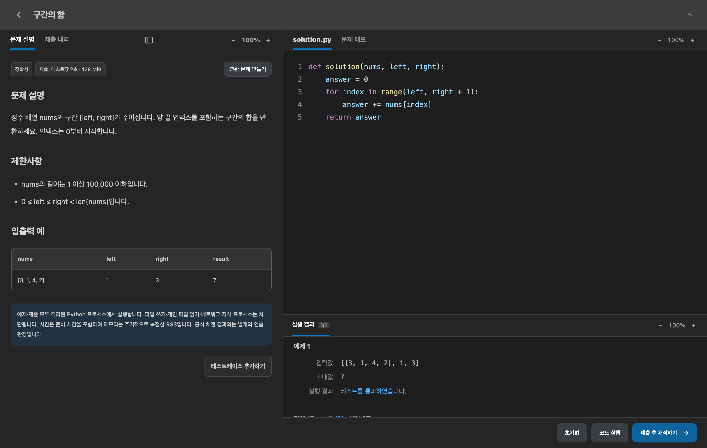
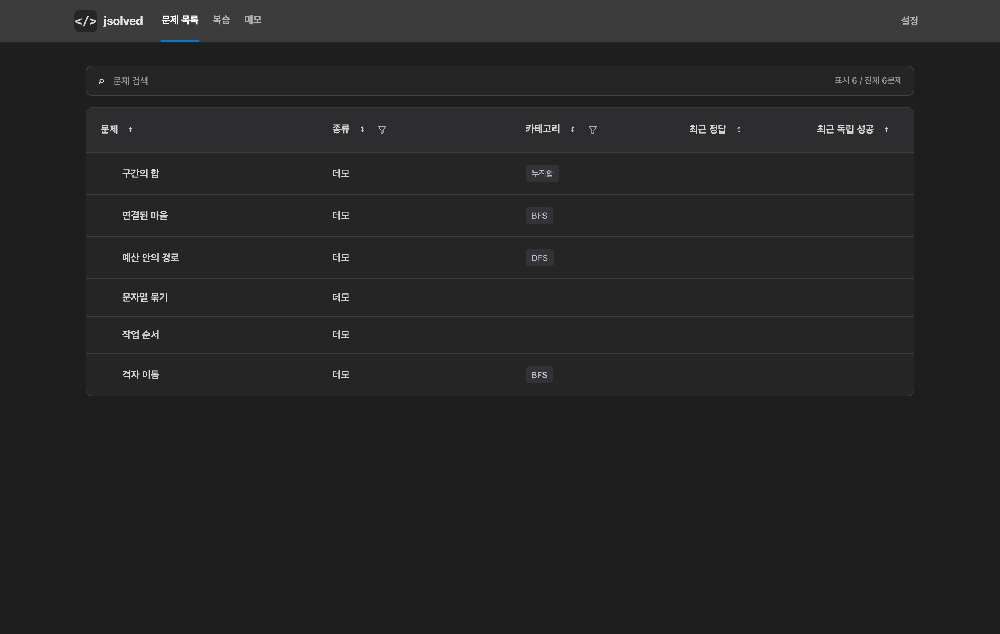
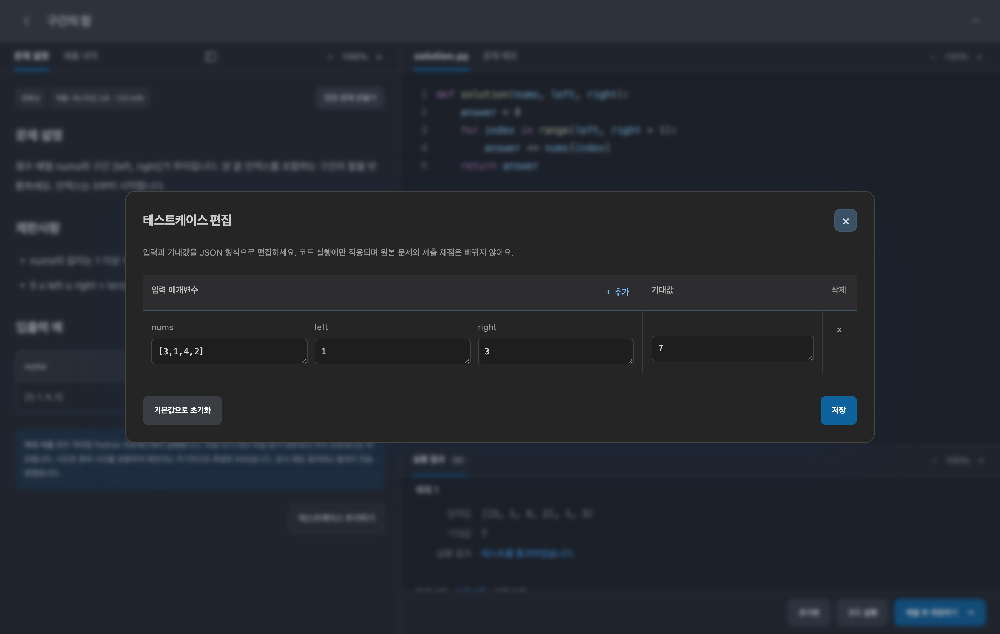
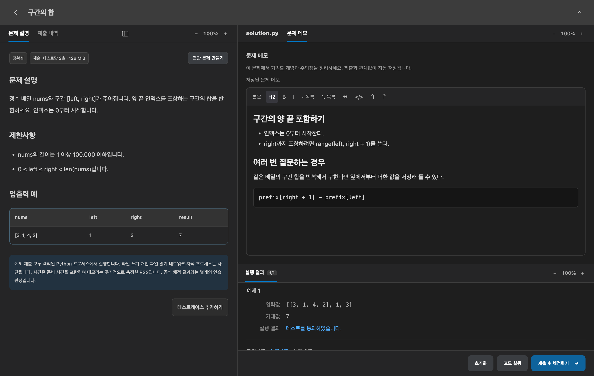
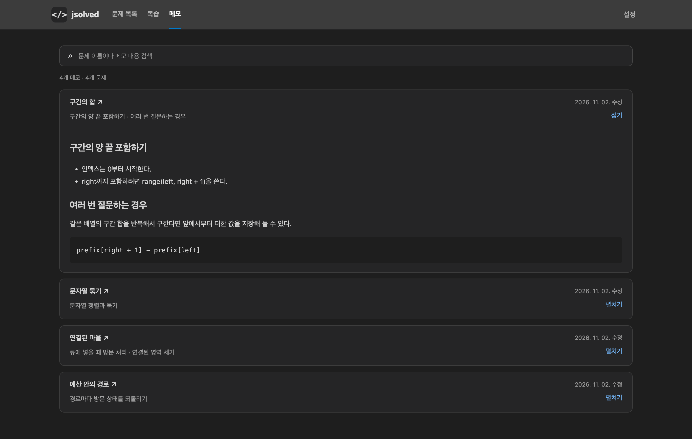
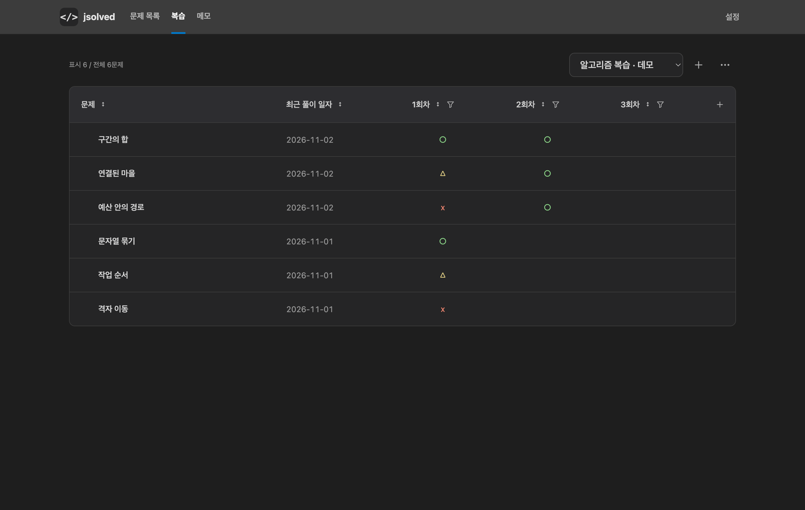
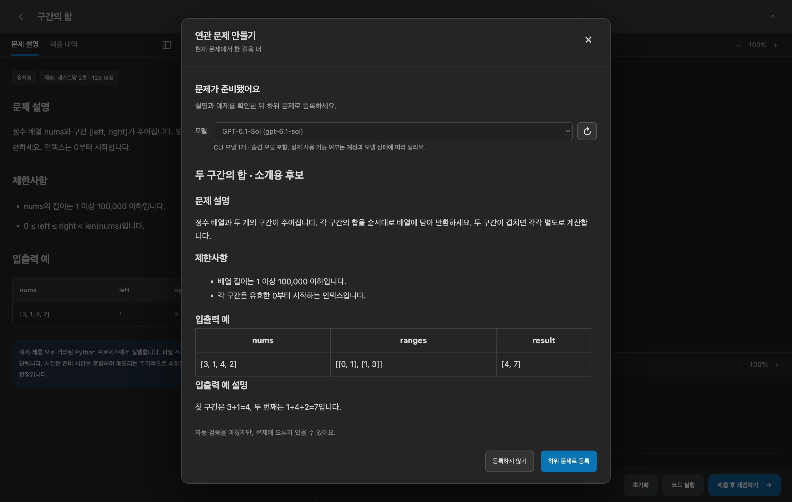

프로젝트 개요
jsolved는 알고리즘 문제를 풀고, 막혔던 내용을 메모하며, 회차별로 다시 풀어 본 결과를 관리하는 개인용 macOS 앱입니다. 문제 설명·Python 코드 에디터·실행 결과를 한 화면에 배치하고, 같은 문제의 제출 내역과 메모를 다시 확인할 수 있게 만들었습니다. 익숙한 문제에서 조건을 바꿔 연습하고 싶을 때는 AI로 연관 문제를 생성한 뒤 원래 문제의 하위 문제로 등록합니다.
코딩테스트를 공부하면서 정답 코드뿐 아니라 어디서 도움을 받았고, 나중에 무엇을 다시 떠올려야 하는지를 남길 공간이 필요했습니다. 문제 목록, 풀이 화면, 복습표, 메모 목록을 연결해 같은 문제를 다시 찾아가는 조작을 줄였습니다.

화면은 소개용 합성 데이터로 실제 앱을 실행해 캡처했습니다. AI 생성 미리보기는 합성 응답으로 재현했습니다.
Electron과 JavaScript로 화면과 데스크톱 기능을 구성했습니다. Python 코드는 로컬의 격리 프로세스에서 실행하고, AI 생성은 LangGraph로 흐름을 관리합니다. 모델 호출은 교체 가능한 인터페이스로 분리했으며 현재 어댑터는 Codex CLI를 사용합니다. 문제와 학습 기록은 로컬에 저장하고, AI 생성에는 외부 모델 호출과 인터넷 연결을 사용합니다.
문제 선택과 Python 풀이
문제 목록에서 카테고리와 풀이 날짜를 확인하고 연습할 문제를 고릅니다. 문제 이름으로 검색하거나 분류별로 걸러 볼 수 있으며, AI로 만든 연관 문제는 원래 문제 아래에 연결합니다.

문제를 열면 왼쪽에 설명과 예제, 오른쪽에 코드 에디터와 실행 결과가 나타납니다. 설명을 작게 읽고 코드를 크게 보고 싶을 때는 각 영역의 글자 크기를 따로 조절합니다. 영역을 나누는 경계도 옮길 수 있고 설정은 다음 실행 때 다시 적용합니다.
코드 실행은 공개 예제와 직접 편집한 테스트를 실행합니다. 원본 예제의 입력·기대값을 기본으로 불러온 뒤 값을 바꾸거나 행을 추가할 수 있고, 초기화하면 원본 예제로 돌아갑니다. 제출 후 채점하기는 별도의 채점 테스트를 사용하며 편집용 테스트의 변경은 제출 판정에 영향을 주지 않습니다.

예제 실행에서는 입력·기대값과 실제 실행 결과를 함께 확인합니다. 제출 채점에서는 테스트별 통과 여부와 실행 시간·메모리를 표시해 숨은 입력이 풀이 힌트로 드러나지 않도록 했습니다. 제출한 코드와 판정은 제출 내역에서 다시 확인합니다.
다시 읽을 내용을 문제 메모로 정리
한 문제를 여러 번 풀어도 계속 참고할 개념은 문제 메모에 남깁니다. 특정 제출의 코드에 관한 설명은 해당 제출에 덧붙이고, 문제 전체에 적용되는 주의점은 별도의 문제 메모로 관리합니다.
Markdown과 서식 편집을 지원하고 작성 내용은 자동 저장합니다. 소제목·목록·코드 블록으로 정리해, 나중에 코드를 다시 읽기 전에 핵심부터 떠올릴 수 있게 했습니다.

상단의 메모 메뉴에서는 여러 문제에 남긴 내용을 모아 봅니다. 접힌 상태에서는 소제목을 우선 보여 주고, 펼치면 서식이 적용된 본문을 읽습니다. 문제 이름과 메모 내용으로 검색하고 해당 문제의 메모 화면으로 이동합니다.

회차별로 기록하는 복습
복습할 문제를 골라 표를 만들고 회차마다 풀이 날짜와 상태를 기록합니다. 정답 여부뿐 아니라 혼자 해결했는지, 구현·검증에서 도움을 받았는지, 접근부터 도움이 필요했는지를 구분합니다. 충분히 익숙해진 문제는 복습 제외로 표시합니다.

○는 혼자 해결, △는 구현·검증 도움, x는 접근부터 도움을 뜻합니다. 상태는 사용자가 기록한 풀이 경험이며, 채점 통과만으로 독립 해결 여부를 자동 판정하지 않습니다. 회차별 상태 필터는 여러 값을 함께 선택할 수 있습니다.
다이어그램 원문
flowchart LR
A[문제 선택] --> B[Python 풀이·실행]
B --> C[제출 후 채점]
C --> D[제출 내역·문제 메모]
D --> E[회차별 복습 기록]
E --> A
D --> F[AI 연관 문제 생성]
F --> G[하위 문제 등록]
G --> A
메뉴 막대에서는 학습 기록의 잔디를 확인하고 앱을 엽니다. 로그인 시 실행 여부도 설정할 수 있어, 학습 기록에 접근하는 경로를 앱 안에만 두지 않았습니다.
앱 내부 처리 흐름
화면에서 요청한 문제 조회·저장·채점·AI 생성을 메인 프로세스가 처리합니다. 문제와 학습 기록은 로컬 파일로 관리하고, Python 실행과 AI 모델 호출은 각각 별도의 실행 경로로 연결합니다.
다이어그램 원문
flowchart TB
U[문제 목록·풀이·복습·메모 화면] --> M[메인 프로세스]
M --> R[문제·기록 저장 서비스]
M --> J[Python 채점 실행기]
M --> G[AI 생성 서비스]
R --> D[(로컬 문제·기록·이미지)]
G --> J
G --> C[Codex CLI 어댑터]
C --> L[외부 AI 모델]
G -->|승인한 문제 등록| R
목록은 제목·분류·문제 UUID처럼 가벼운 정보만 읽고, 문제를 열 때 UUID로 설명·예제를 조회합니다. 메모·제출 내역·복습표도 같은 UUID로 연결하므로 제목이나 분류가 바뀌어도 기록을 이어서 사용할 수 있습니다. 생성한 문제는 자신의 UUID와 원본을 가리키는 부모 UUID를 갖습니다.
새 문제를 등록하면 목록 변경을 알리고 복습표의 문제 선택에도 반영합니다. 개발 앱과 설치 앱은 같은 데이터 폴더를 사용해 어느 쪽에서 풀었는지에 따라 기록이 갈라지지 않도록 했습니다.
AI 연관 문제 생성과 검토
문제 상세에서 연관 문제 만들기를 누르면 AI가 새 설명, 제한사항, 공개 예제, 기준 정답 코드와 채점 테스트를 만듭니다. 응답은 JSON Schema에 맞는 구조화 데이터로 받으며, 앱은 필수 필드와 자료형, 매개변수 수, 예제와 설명의 대응을 검사합니다.
생성한 기준 풀이만으로 문제의 답을 신뢰하기 어려워, 문제 설명만 보고 다시 푸는 에이전트와 두 풀이를 실행해 보는 채점 과정을 추가했습니다. LangGraph는 각 단계의 상태와 다음에 실행할 단계를 관리합니다.
다이어그램 원문
flowchart TD
A[원본 문제의 설명·예제] --> B[생성 AI: 새 문제·기준 풀이·테스트]
B --> C{형식 검사 통과?}
C -->|통과| D[독립 풀이 에이전트]
C -->|실패| G
D --> E[두 풀이를 공통 테스트로 채점]
E --> F[검토 에이전트: 추가 실행·설명 검토]
F --> G{등록 조건 충족?}
G -->|통과| H[문제 미리보기]
H -->|사용자 승인| I[원본의 하위 문제로 등록]
G -->|실패·시도 여유 있음| K[실패 내용·모순 피드백]
K --> B
G -->|최대 시도 도달| X[후보 폐기]
H -->|등록하지 않음| X
| 역할 | 수행하는 일 |
|---|---|
| 생성 AI | 새 문제와 기준 풀이·테스트, 필요한 SVG를 구조화해 반환합니다. |
| 독립 풀이 에이전트 | 새 문제의 설명·시작 코드·공개 예제만 받고 자신의 풀이를 작성·실행합니다. 기준 풀이와 숨은 테스트는 받지 않습니다. |
| 검토 에이전트 | 두 풀이와 실행 결과를 비교하고 추가 입력으로 실험합니다. 설명의 모순, 예제 계산, 그림의 필요성과 정확성을 검토합니다. |
| 앱 | 실행 실패와 검토 이슈가 없는지 확인한 뒤 사용자 승인 단계로 넘깁니다. |
풀이·검토 에이전트는 실행 도구를 요청하고 관찰한 결과를 바탕으로 다음 행동이나 결론을 선택합니다. 모순이 발견되면 생성 AI에 피드백하고 최대 3차까지 다시 생성합니다. 검토가 승인했더라도 필수 실행에서 실패하면 등록 단계로 넘어가지 않습니다.

마지막에는 사용자가 설명과 예제를 읽고 하위 문제로 등록을 선택합니다. 독립 풀이와 검토 중에 얻은 추가 테스트도 최종 채점 데이터에 포함합니다. 승인 대기 중인 후보는 메모리에 두며 실패·취소·앱 종료 후에는 새로 생성합니다.
독립 풀이는 기준 답안을 받지 않도록 문맥을 분리한 것입니다. 같은 모델이 같은 오류를 낼 수 있으므로 두 풀이의 일치와 유한한 테스트 통과가 완전한 정답 보장은 아닙니다.
그래프나 격자 설명에 그림이 필요하면 SVG와 삽입할 문단 위치를 함께 생성합니다. 검토 에이전트는 SVG 소스를 보고 필요성·정확성·중복·풀이 노출 여부를 확인하고, 빠진 그림이 필요하면 추가 요청을 반환합니다. 앱은 SVG의 스크립트·외부 참조 등을 차단하고 사용자 승인 후 최종 그림을 저장합니다.
AI 호출부를 교체할 수 있는 구조
워크플로와 에이전트는 generateStructured({prompt, schema, signal}) 인터페이스를 호출합니다. 현재 CodexCliAdapter가 이를 codex exec --output-schema 요청으로 바꾸고 응답 JSON을 파싱·검증합니다. 모델은 생성 화면에서 선택합니다.
다이어그램 원문
flowchart LR
W[LangGraph·풀이·검토] --> P[StructuredAiClient 인터페이스]
P --> C[현재: CodexCliAdapter]
C --> E[codex exec와 JSON Schema]
P -. 같은 계약으로 구현해 교체 .-> N[다른 SDK·모델 어댑터]
다른 SDK나 모델을 연결할 때는 이 계약을 구현한 어댑터를 주입하도록 분리했습니다. 현재 구현된 어댑터는 Codex CLI이며, 워크플로와 에이전트 코드에는 CLI 명령이나 특정 SDK 호출을 직접 넣지 않습니다.
Python 코드를 제한된 권한으로 실행
사용자가 작성한 풀이뿐 아니라 AI가 만든 코드도 실제로 실행해야 합니다. 따라서 예제 실행·직접 편집한 테스트·제출 채점·AI 풀이 검토를 같은 격리 실행 경로로 모았습니다.
다이어그램 원문
flowchart LR
A[예제·편집용 테스트] --> J[공통 Python 실행기]
B[제출 채점] --> J
C[AI 풀이·검토] --> J
J --> S{격리 실행 지원?}
S -->|지원| P[sandbox-exec의 Python 프로세스]
S -->|미지원| X[실행 거부]
P --> R[반환값 비교·실행 결과]
현재 macOS의 sandbox-exec로 별도의 Python 프로세스를 띄웁니다. Python 런타임과 채점 스크립트에 필요한 읽기를 허용하고, 개인 파일 읽기·일반 파일 쓰기·네트워크·자식 프로세스 실행은 차단합니다. 격리 실행을 지원하지 않으면 실행을 거부하며 제한 없이 실행하는 경로로 우회하지 않습니다.
입력과 기대값을 전달하면 실행기가 solution 함수를 호출해 반환값을 비교합니다. 시간·출력 제한을 두고, 메모리 사용량을 주기적으로 확인해 제한을 넘는 실행은 중단합니다. Python은 호스트의 같은 macOS 위에서 실행되지만, 풀이 코드에 허용하는 자원 접근 범위를 별도로 제한하는 방식입니다.
개발 방식
개인 학습에 필요한 풀이·복습·메모 흐름을 정하고, 직접 사용하며 화면 배치와 기록 연결, AI 생성의 검토 조건을 구체화했습니다. 코드와 화면 구현에는 AI 코딩 도구를 활용했습니다. 현재는 macOS에서 사용하는 Python 함수형 문제 중심의 개인 학습 앱입니다.